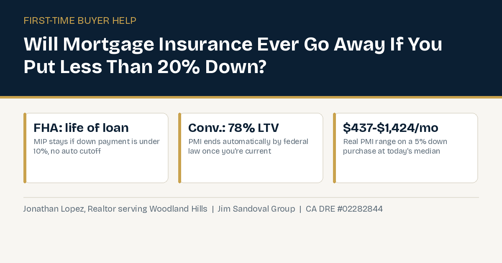

Will I Be Stuck Paying Mortgage Insurance Forever If I Buy In Woodland Hills With Less Than 20% Down?

Almost every first time buyer in Woodland Hills who cannot put 20% down asks some version of the same question once they understand mortgage insurance exists: am I stuck paying this forever? It is a fair question, and the honest answer is that it depends entirely on which loan program you choose, FHA or conventional, because the two work completely differently once you own the home.
How FHA Mortgage Insurance Actually Works
FHA loans are popular with first time buyers because they allow a down payment as low as 3.5%. That access comes with a real cost. Most FHA borrowers pay an upfront mortgage insurance premium (UFMIP) of 1.75% of the loan amount, typically rolled into the loan itself rather than paid in cash at closing, plus an annual mortgage insurance premium (MIP) of about 0.55% of the loan balance, split into monthly payments.
Here is the number that surprises most first time buyers. On today's 91367 median sale price of $1,199,000, a 3.5% down payment works out to about $41,965, leaving a base loan of roughly $1,157,035. The upfront MIP on that loan comes to about $20,248. The annual MIP, at 0.55% of the base loan amount, works out to roughly $6,364 a year, or about $530 a month, starting out.
The part that actually matters long term: whether that $530 a month ever goes away depends on your down payment, not your payment history. If you put down less than 10%, current FHA rules require MIP for the entire life of the loan. There is no automatic cutoff at any equity threshold. The only way off is refinancing into a different loan, generally a conventional loan, once you have built up enough equity, typically around 20%, to do so without mortgage insurance on the new loan. If you put down 10% or more, FHA MIP can be cancelled after 11 years on loans originated after June 3, 2013, which is a real improvement, but still a long runway.
How Conventional PMI Works Differently
A conventional loan uses private mortgage insurance (PMI) instead of FHA's MIP, and it is governed by a different set of rules, the federal Homeowners Protection Act. PMI typically costs between 0.46% and 1.50% of the loan amount per year, and credit score is the single biggest factor in where you land in that range. Borrowers with scores of 760 or higher can pay as little as 0.46% a year, while borrowers in the 620 to 639 range can pay up to 1.50%.
Applied to a 5% down purchase at Woodland Hills' current $1,199,000 median (a loan of roughly $1,139,050), that range works out to about $437 a month at the low end and about $1,424 a month at the high end, depending entirely on credit profile. That is a real reason a first time buyer's credit score is worth working on before applying, not after.
The genuinely good news with conventional PMI: federal law requires it to automatically terminate once your loan balance is scheduled to reach 78% of the original property value, as long as you are current on your payments, no request required. You can also proactively request cancellation once your balance hits 80% of the original value, again with a track record of on time payments and no decline in property value. That is a real, guaranteed exit ramp that FHA's under-10%-down MIP simply does not offer on its own.
There Is a Third Option: Lender-Paid PMI
Some lenders also offer lender-paid mortgage insurance (LPMI) on conventional loans, which is worth understanding even if you do not end up using it. Instead of paying a separate monthly PMI charge, the lender covers that premium in exchange for a higher interest rate, typically 0.25% to 1.5% higher, folded into the loan for its entire term. The appeal is a lower, simpler monthly payment up front, since there is no separate mortgage insurance line item.
The catch is real and permanent: LPMI generally cannot be cancelled, even once you build 20% equity, because the cost is baked into the interest rate itself, not billed separately. Over a full 30 year term, the extra interest from LPMI can end up costing tens of thousands of dollars more than standard PMI that gets cancelled once you cross 78% to 80% loan to value. It tends to make the most sense for buyers who plan to sell or refinance within a few years, since they never stick around long enough for that extra lifetime interest to catch up with them. For a buyer planning to stay in a Woodland Hills home long term, standard, cancellable PMI is usually the better math.
This is a different question than whether you actually need 20% down to buy here at all or whether an FHA loan will let you qualify on a median-priced Woodland Hills home, both worth reading first if you have not settled on a loan program yet. This post picks up after that decision, once the loan is in place, and answers what actually happens to the mortgage insurance itself over time.
Putting the Options Side by Side
For a buyer choosing between these at Woodland Hills' current median price: FHA gets you in the door with the smallest possible down payment (3.5%) but, if you stay under 10% down, commits you to mortgage insurance for as long as you hold that loan, unless you refinance later. Conventional financing usually requires a bit more down and, depending on credit, can cost more or less per month than FHA in the mortgage insurance itself, but it comes with a real, automatic end date once you build equity. LPMI trades a permanent rate increase for a simpler monthly payment, and tends to suit short term owners best.
Neither FHA nor conventional is a wrong choice on its own. A buyer who plans to refinance or move within a few years may not care that FHA MIP does not expire on its own. A buyer planning to stay long term, and who can get a competitive rate on the conventional side, may find that automatic cutoff genuinely valuable.
Bottom Line
Whether you end up paying mortgage insurance for a few years or for the life of the loan comes down to one decision made before you ever make an offer: which loan program you choose and how much you put down. That is exactly the kind of thing worth working through with real numbers before you start touring homes, not after you are already under contract. I can walk you through what each option actually costs over time for your situation.
Frequently Asked Questions
If I buy in Woodland Hills with an FHA loan and less than 10% down, will my mortgage insurance ever go away on its own?
No. Under current FHA rules, mortgage insurance (MIP) on a loan with less than 10% down lasts for the life of the loan. It does not automatically cancel at any equity threshold. The only way to remove it is refinancing into a different loan, typically once you have around 20% equity.
What if I put down 10% or more on an FHA loan?
FHA MIP can be cancelled after 11 years on loans originated after June 3, 2013, if you put down 10% or more at closing. That is an automatic cutoff, but it is still a long timeline compared to conventional PMI.
How much does conventional PMI actually cost?
Typically 0.46% to 1.50% of the loan amount per year, mostly driven by credit score. On a 5% down purchase at Woodland Hills' current $1,199,000 median price, that works out to roughly $437 to $1,424 a month depending on credit profile.
When does conventional PMI automatically end?
Federal law, the Homeowners Protection Act, requires it to automatically terminate once the loan balance is scheduled to reach 78% of the original property value, as long as payments are current. Borrowers can also request cancellation once they reach 80% of the original value, with a good payment history.
Is FHA or conventional financing better for a first time buyer in Woodland Hills?
It depends on down payment, credit score, and how long the loan will be held. FHA allows the smallest down payment (3.5%) but can mean paying mortgage insurance indefinitely if the buyer stays under 10% down. Conventional financing usually needs more down but comes with a guaranteed mortgage insurance cutoff. Running both scenarios with real numbers before making an offer is the only way to know which actually costs less for a given situation.
What is lender-paid PMI, and is it a good idea?
With lender-paid PMI (LPMI), the lender covers the mortgage insurance premium in exchange for a higher interest rate, typically 0.25% to 1.5% higher, for the life of the loan. It lowers the monthly payment up front, but unlike standard PMI, it generally cannot be cancelled, even after building 20% equity, since the cost is built into the rate itself. It tends to work out better for short term owners than for buyers planning to stay long term.
Trying to decide between FHA and conventional financing for your first Woodland Hills home?
Or call (818) 934-7576.
The dollar figures above are calculated directly from today's 91367 median sale price and published national mortgage insurance rate ranges. Actual PMI or MIP rates depend on individual credit score, loan amount, and lender, and mortgage rates and insurance pricing both move over time. Treat this as real, sourced math on a real current price point, not a personalized quote.
Sources:
- The Mortgage Reports — How to Remove FHA Mortgage Insurance (updated January 13, 2026)
- Experian — How Much Does Private Mortgage Insurance (PMI) Cost? (updated May 7, 2026)
- NCUA — Homeowners Protection Act (PMI Cancellation Act) summary
- ok.com — PMI vs Lender-Paid PMI: A 2026 Comparison for Homebuyers
- Movoto — 91367 Market Trends (updated September 22, 2026)